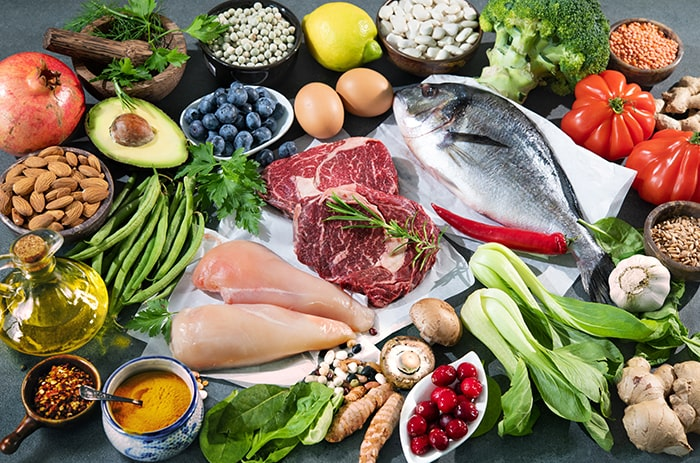

First introduced in 2000, the Volumetrics Eating plan has been lauded by nutrition experts for its safe and effective approach to weight loss and more importantly, for being sustainable in the long run. How does it work and why is it so effective? We break it down.
Who Created It?
Barbara Rolls, Ph.D., a professor and chair of Nutritional Sciences at the Penn State University in the USA.
What Is It?
Rather than calorie deficit as advocated by many diets, Volumetrics Eating focuses on low caloric density. That is, foods that are high in nutrients but low in calories. This enables you to eat a large amount of food – to the point of satiety – without overloading on calories. Instead, you will fill up on foods that are high in fibre and water such as fruits, vegetables, beans, and lean proteins. Because fibre and protein take longer to digest, they keep you feeling full longer. It is this “eat more for less” approach that helps you to lose excess weight and keep them off.

How Do You Calculate Caloric Density?
Divide the number of calories by the weight in grams. A serving of 100g of broccoli, for example, has about 34 calories, which puts its caloric density at 0.34. The plan divides foods into 4 categories according to their caloric density:
Category 1 (very low):Fruits, non-starchy vegetables, and broth-based soups
Category 2 (low): Whole grains, lean meats, beans, and low-fat dairy
Category 3 (medium): Bread, some desserts, cheese, and higher fat foods
Category 4 (high): Fried or fatty foods, and sweets
The Volumetrics Diet plan encourages you to eat mostly Category 1 foods, some from Category 2, a bit of Category 3, and once in a while from Category 4. Generally, no foods are completely off-limits as long as you’re mindful of the portions and frequency that you’re eating.
Does It Include Exercise?
While the plan doesn’t include any specific fitness elements, it does encourage some movement throughout the day such as walking up to 10,000 steps per day.
So who should go on the Volumetrics Eating plan? If you’re not a fan of hardcore or trendy diets, have tried them all but to no avail, or find that restrictive eating doesn’t suit you, this may be worth a try (consult your physician before you start). You won’t experience rapid weight loss but can expect an average of two pounds per week, which is the rate that experts recommend as safe and healthy.